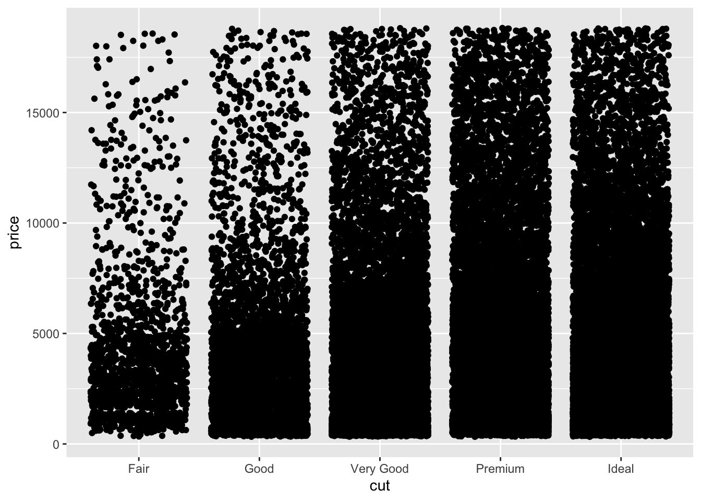
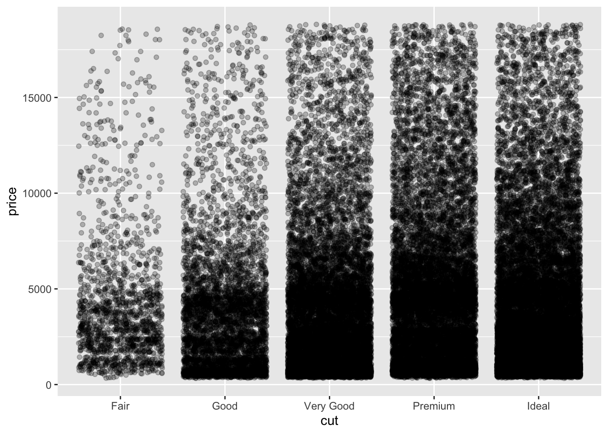
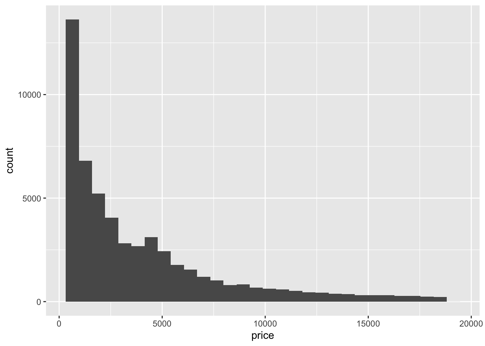
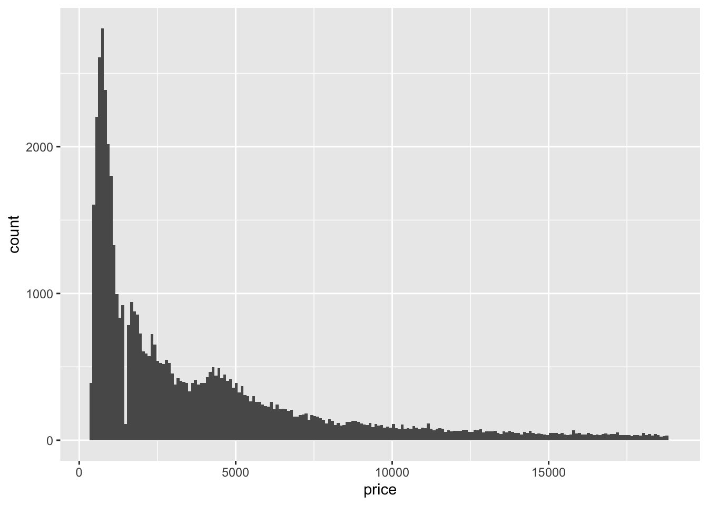

8 Big(ger) Data: 54,000 diamonds
When ploting a small dataset such as mpg_df, its possible to visualize every individual data point. This is impractical for large datasets, where we run into the problem of ‘overplotting’. We therefore need approaches for managing over-plotting. These include but aren’t limited to:
- reducing density
- summing, and
- summarizing the data.
To explore these options we will now move on to a much larger data set containing multiple measurements for 54,000 diamonds. The measurements appear in separate columns, and each diamond appears in a different row.
As for mpg, this data is available through the tidyverse package.
https://www.diamonds.pro/wp-content/uploads/2019/02/diamond-depth-and-table.png
First let’s view the first 6 rows of the diamond_df dataset
 img from: https://www.diamond.pro/education/diamond-depth-and-table/
img from: https://www.diamond.pro/education/diamond-depth-and-table/
## # A tibble: 6 x 10
## carat cut color clarity depth table price x y z
## <dbl> <ord> <ord> <ord> <dbl> <dbl> <int> <dbl> <dbl> <dbl>
## 1 0.23 Ideal E SI2 61.5 55 326 3.95 3.98 2.43
## 2 0.21 Premium E SI1 59.8 61 326 3.89 3.84 2.31
## 3 0.23 Good E VS1 56.9 65 327 4.05 4.07 2.31
## 4 0.290 Premium I VS2 62.4 58 334 4.2 4.23 2.63
## 5 0.31 Good J SI2 63.3 58 335 4.34 4.35 2.75
## 6 0.24 Very Good J VVS2 62.8 57 336 3.94 3.96 2.48You can read the definitions of each measurement (column name) in the help manual for the original (‘hidden’) dataset by typing ?diamonds
We can get the number of rows and columns (the ‘dimensions’) of this dataset using the dim() function:
## [1] 53940 10First let’s make a scatter plot comparing the price of diamonds (y) by cut (x):

Because there are 54K points here the plot is essentially useless. What can we do to get more information about the relationship?
## geom_jitter()
This adds some random scatter to the points which can reduce over-plotting. Note that to avoid mis-representing the price, we should set the jitter height to 0.

This is somewhat improved but far from good. Next we will make the points more transparent using the ‘alpha’ setting within geom_jitter.

The density below $5000 can be further reduced by limiting the size of the points, again within the geom_jitter() command.

Now we can see much more detail in the data, including an interesting lack of data around the $3000 mark in the Very Good and Premium cut data. This could be due to other features such as size, carat or clarity. We will return to these possibilities later.
8.1 Summary plots
Its clear that the cut group sizes are uneven. To get a quick summary of the numbers of diamonds per group, we can make a bar plot. Here we specify only the group we wish to count (i.e. the number of diamonds of each cut) as the x aesthetic. Importantly, the group size is summed and displayed automatically when we specify geom_bar().

Alternatively, if we want to find the total value of the diamonds in each group, we use a related geom that sums the values in a column (rather than the number of rows), called geom_col. Here we give price, that is, the column whose values we want to sum, as the y axis aesthetic.
 From this we can see the total value of the Ideal cut diamonds alone is > $70 million!
From this we can see the total value of the Ideal cut diamonds alone is > $70 million!
8.1.1 Free examples!
If you are unsure how to use a function in R, the help page will usually have Example code at the bottom.
You can copy and paste these examples and they should work first time. The code below is taken directly from the first example for geom_bar():
# geom_bar is designed to make it easy to create bar charts that show
# counts (or sums of weights)
g <- ggplot(mpg, aes(class))
# Number of cars in each class:
g + geom_bar()
To add more information, we could count the clarity groups per cut group. Adding clarity into the aesthetic as the bar fill color will automatically calculate and display these sub-groups.

We can rearrange the clarity groups into adjascent (dodged) bars by specifying a different position within geom_bar():

8.2 Histograms
When dealing with large datasets especially for statistical testing, histograms are essential for understanding the distribution of values.
Like geom_bar() above, geom_histogram() requires only a single x aesthetic, specifying the values to be displayed. Further, the values will be automatically sorted into 30 bins and the number of rows of data per bin summed up.
Here we plot the distribution of prices across the entire dataset.

To increase the resolution of the histogram, lets specify 200 bins:
 Here we can see an interesting lack of data around $1000. Let’s zoom in using xlim, and add some fill color.
diamond_df %>% ggplot(aes(x = price)) +
geom_histogram(bins=200, fill = 'dodgerblue') +
xlim(0,2500)## Warning: Removed 26398 rows containing non-finite values (stat_bin).## Warning: Removed 2 rows containing missing values (geom_bar).
There are virtually no diamonds around the $1500 mark. What could be the reason for this?
R will give a warning that some data is not represented in the plot. This is part of the ggplot philosophy that ‘data should not go missing silently.’
8.3 Density plots
Whereas it can be difficult to represent multiple sub-groups in a histogram, density plots are another essential tool for exploring your data. These are essentially smoothed histograms, where the area under the curve for each sub-group will sum to 1. This allows us to compare sub-groups of different size.

8.4 Box plots
 img from: https://miro.medium.com/max/18000/1*2c21SkzJMf3frPXPAR_gZA.png
Box plots, or ‘box & wisker plots’ are another essential tool for data analysis, which are related to histograms and density plots. Box plots summarize the distribution of a set of values by displaying the minimum and maximum values, the median (i.e. middle-ranked value), and the range of the middle 50% of values (interquartile range).
img from: https://miro.medium.com/max/18000/1*2c21SkzJMf3frPXPAR_gZA.png
Box plots, or ‘box & wisker plots’ are another essential tool for data analysis, which are related to histograms and density plots. Box plots summarize the distribution of a set of values by displaying the minimum and maximum values, the median (i.e. middle-ranked value), and the range of the middle 50% of values (interquartile range).
The wisker line extending above and below the IQR box define Q3 + (1.5 x IQR), and Q1 - (1.5 x IQR) respectively. You can read more about box plots here.
To create box plot from our data we use (no prizes here) geom_boxplot()!
 The points indicate outlier values [i.e., those greater than Q3 + (1.5xIQR) ].
The points indicate outlier values [i.e., those greater than Q3 + (1.5xIQR) ].
We can overlay a boxplot on the scatterplot for the entire dataset, to fully communicate both the raw and summary data.
Here we reduce the width of the jitter points slightly, and set the IQR box to be fully transparent using alpha.
Note that this setting also hides the outlier points in geom_boxplot.
diamond_df %>%
ggplot(aes(x=cut, y=price)) +
geom_jitter(height=0, alpha=0.25, size=0.5, width=0.3) +
geom_boxplot(alpha=0)
Because its now difficult to see the box plots, we can colour only the geom_boxplot by setting the colour aesthetic within that geom:
diamond_df %>%
ggplot(aes(x=cut, y=price)) +
geom_jitter(height=0, alpha=0.25, size=0.5, width=0.3) +
geom_boxplot(alpha=0, aes(colour =cut))
The legend contains the same information as the x axis, and is therefore redundant. We can drop the legend by giving an additional command to geom_boxplot:
diamond_df %>%
ggplot(aes(x=cut, y=price)) +
geom_jitter(height=0, alpha=0.25, size=0.5, width=0.3) +
geom_boxplot(alpha=0, aes(colour =cut), show.legend = FALSE)
In fact, a box plot displays very similar information to a density plot, rotated 90°. Violin plots, which reflect the sample density, can be used together with a box plot to convey even more detail about the distribution of a set of values.
Here we limit the width of geom_boxplot to sit within geom_violin.
Because both geoms will be coloured in the same way, we can give the color aesthetic directly to ggplot().
Similarly, because we dont want the legend, we will remove it using the theme() function.
diamond_df %>%
ggplot(aes(x=cut, y=price, colour =cut)) +
geom_boxplot(alpha=0, width=0.15) +
geom_violin(alpha=0) +
theme(legend.position = 'none')